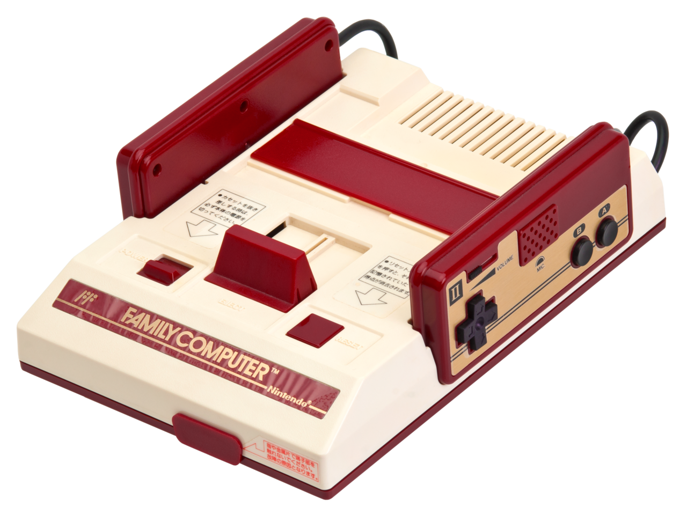
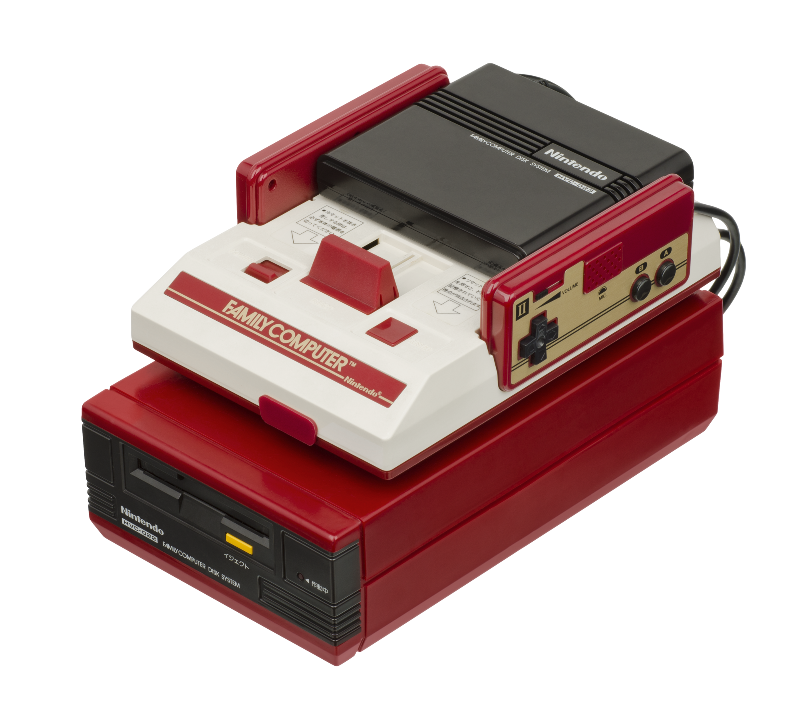
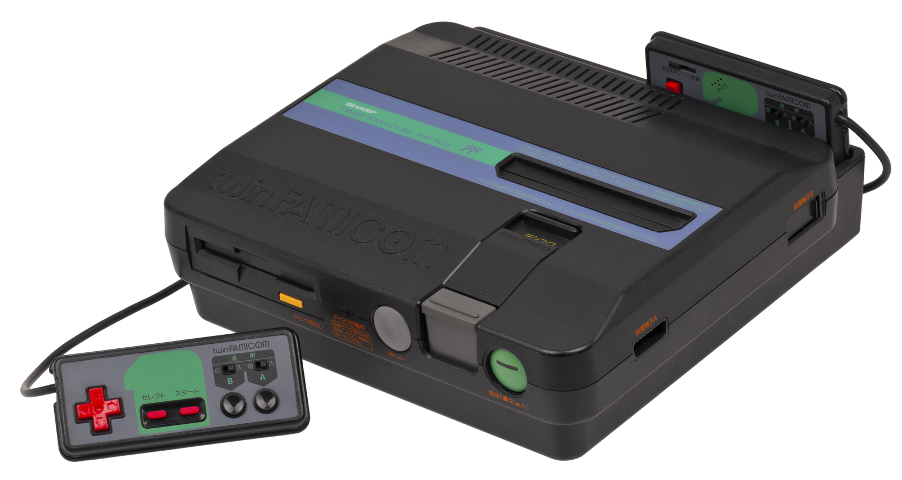
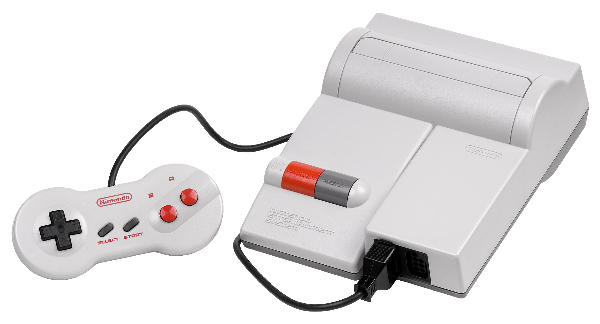
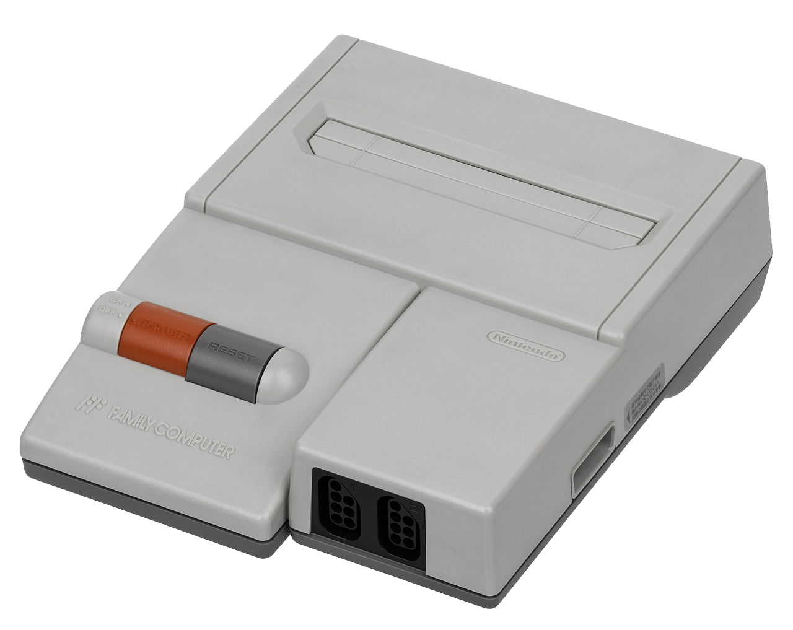
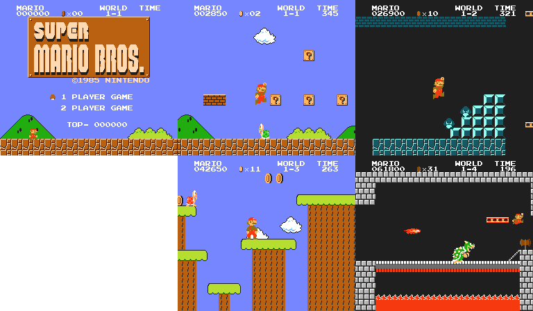
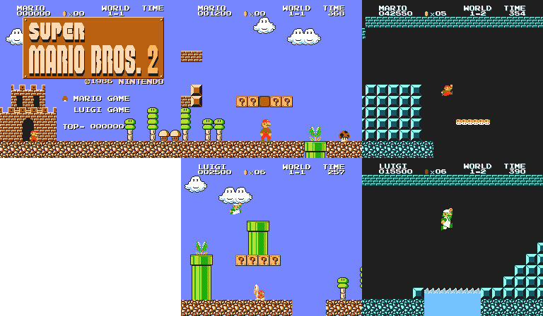
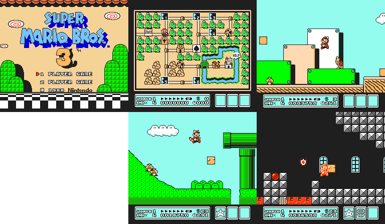
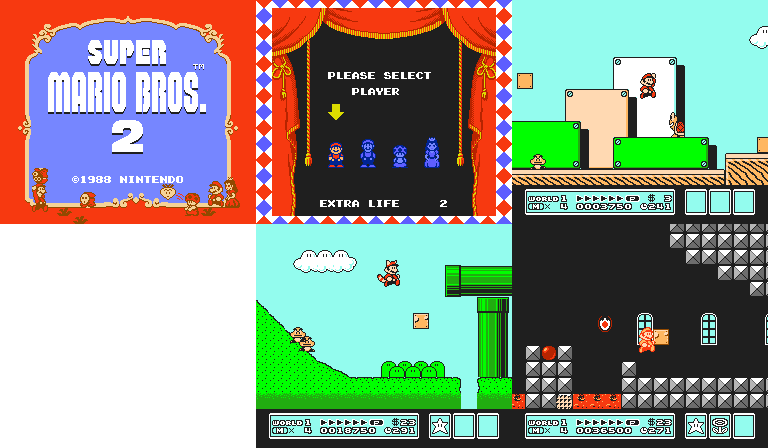
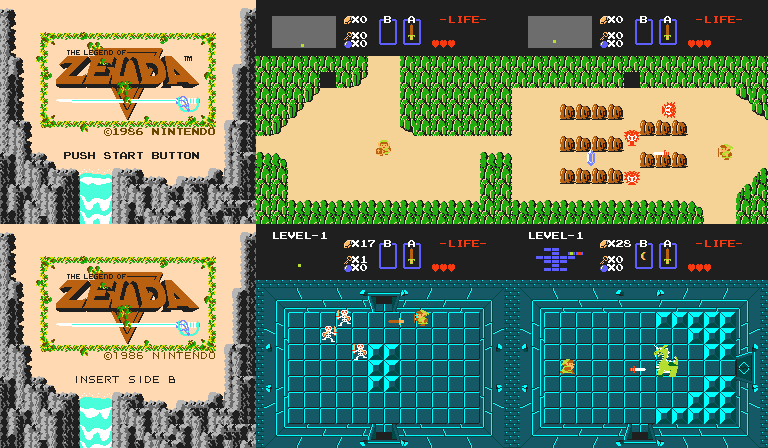

The Nintendo Entertainment System
Personal Favourites: Super Mario Bros, Super Mario Bros. 2/Super Mario USA, The Legend of Zelda, Super Mario Bros. 3
Personal Worst: Super Mario Bros: The Lost Levels
Development of the Nintendo Famicom
In 1982, Nintendo of Japan were in the planning phase of a new system, which they initially dubbed the "GameCom", standing for "Game Computer". However, after system designer Masayuki Uemura's wife proposed the name "Famicom", standing for "Family Computer", the team switched the name, as it sounded more appealing for a family. The initial plan for the system was to use a 16-bit chipset with a keyboard and floppy disk drive, aiming to act more like a personal computer, however the current president of Nintendo, the late Hiroshi Yamauchi, vetoed this idea, as it would've been too expensive. So instead, they elected to use an 8-bit chipset with cartridge-based games.
One of the main inspirations for the Famicom was the Colecovision, which had great graphics (for the time) and had a port of Donkey Kong, which looked and sounded very faithful to the original. However, despite being impressed with it, Nintendo wanted to surpass the Colecovision. As such, they took Donkey Kong's arcade cabinet to Ricoh, where they analysed it and created the Famicom's picture processing unit (PPU) The console additionally had it's controllers hardwired in for budgetary reasons. Initially, joysticks were planned to be used, however, they switched over to Gunpei Yokoi's D-pad after discussing comfort and safety for their target audience. However, they compromised and included a 15-pin port on the system's front, for additional controllers and accessories.
Release of the Nintendo Famicom
On July 15 1985, the Famicom was released in Japan for around $150USD at the time. The console was not the immediate hit that it was in the west two years later, as it suffered from a faulty chip set among the first releases of the console that caused them to crash. As such, Nintendo recalled the system and replaced the motherboards. The popularity of the system, however, soon began to rise, where it became the highest selling Japanese video game system in 1984. When launched, Nintendo only provided their own titles with the system, however Hudson and Namco offered to make games for the system. Nintendo agreed to allow third party developers, however they were to pay a 30% licensing fee.
The Famicom was discontinued in September of 2003, over 20 years after it's original release. However, Nintendo continued to allow repairs for the system until 2007, due to a lack of parts available for the system.
Development of the Nintendo Entertainment System
Initially, Nintendo of America planned to distribute the system in North America, under a partnership with Atari. This partnership was to give Atari exclusive rights to Nintendo's titles, and the system was to be called the "Nintendo Advanced Video System". However, because Coleco was demonstrating their newest PC with Nintendo's Donkey Kong, they stalled the deal. Atari, at the time, was also dealing with the North American Video Game Crash. Because of these two factors, the deal went nowhere, the AVS went unreleased, and Nintendo decided to market and publish the system on their own.
In the following two years, Nintendo let their library of games increase. Additionally, they also redesigned the system. With a front-loading cartridge port covered by a flap, the system looked more like a VCR, with Nintendo aiming to market the system more as a toy than a games console. Additionally, they included the Nintendo Zapper and ROB the Robot with some NES bundles in order to make it seem more like a toy. They also redesigned the system's cartridges, appearing longer and thinner, and with 72 pins instead of 60. In early NES cartridges, depending on the game, there was an internal 60-to-72 pin converter to make localisation easier. Games that required localisation were usually exempt from this treatment.
In order to avoid bootlegging and low quality games releasing for the NES, Nintendo of America added the 10NES lockout chip. This was act as a dual-ended method of protection against unlicensed video games. Nintendo added this to ensure that developers would have to go through them, and to get their seal of approval (metaphorically and physically), which would legally allow for the sale of NES titles.
Release of the Nintendo Entertainment System
The NES saw a limited test market release in October of 1985, with the system faring well in these markets. In February of 1986, the system was released in Los Angeles, with the system released across the whole of the US in September of 1986. The system was released in Europe via several companies, who localised the system and released it across 1986 and 1987. Mattel handled distribution for the UK, Ireland, Italy, Australia and New Zealand, where these regions saw releases in 1987. Several Asian countries recieved the system as a "Asian Edition" NES, despite the existence of the Famicom in Japan. South Korea got the NES as the Comboy, distributed by Hyundai Electronics (no relation to the car company), because of cultural disputes between Japan and South Korea. The system was sold in India by Samurai, however due to Indian legislation preventing the import of electronics at the time, it was assembled locally via parts kits.
Nintendo officially supported the system until August 1995, where they stopped selling it, however they provided repairs for the system until December 1996.
The Famicom Disk System
Nintendo was pleased with the Famicom's sales in Japan, however there were shortages in chips and semiconductors. Additionally, these compontents increased the price of the games, so they decided to solve these problems with an addon for the system. The Famicom Disk System was conceptualised to be a more cost-effective way of purchasing games, and as such, used modified Quick Disks. Additionally, Nintendo set up Disk Writer Kiosks in electronics stores and toy stores around Japan.
While the Famicom Disk System was a success, as it sold 4 million units, it was a very short lived one, as by 1988, the system was rendered obsolete by expanded chipsets, which allowed developers to develop more complex games for the standard Famicom. Ironically, this allowed Disk System games to be ported to the NES for international releases, such as The Legend of Zelda, Metroid, Castlevania, Kid Icarus and Zelda 2. The last game for the system was released in 1992, the system itself was discontinued alongside the NES in 2003, and support was dropped in 2007.
Nintendo would revisit distributable games with the Satellaview in 1995, and the disk format itself would be revisited briefly in 1999 with the Nintendo 64 Disk Drive.
Legacy
The Nintendo Entertainment System/Famicom was a revolutionary system, making gaming even more accessible for families and individuals alike. It allowed developers to create experiences that hadn't been imaginable 5 years before. The system was insanely popular, selling nearly 62 million units worldwide. It crushed it's "rival", the Sega Master System by a factor of 3 NES systems to 1 Master System.
The NES had cultivated a library of cult classics, such as The Legend of Zelda, Kirby's Adventure, Duck Hunt, Tetris, Castlevania, Metroid, Kid Icarus, and of course, Super Mario Bros. With most of these series still on-going today, it's safe to say that Nintendo will be able to keep producing these games long into the future.
Console Gallery
The original Famicom, HVC-001, released in July 1983
The original Nintendo Entertainment System, NES-001, released in October 1985

The Famicom Disk System, HVC-022, released in February 1986
The Twin Famicom, AN-500-B, released in July 1986
The New-Style NES, NES-101, released in October 1993
The AV-Famicom, HVC-101, released in December 1993
Games Gallery (Gameplay captured with FCEUX)
Super Mario Bros.
Super Mario Bros. 2 (JP)/Super Mario Bros.: The Lost Levels (Int.)
Super Mario Bros. 3
Super Mario Bros. 2 (World)/Super Mario USA (Jp.)
The Legend of Zelda
